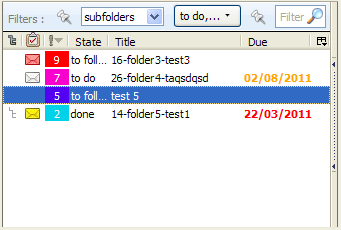
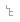
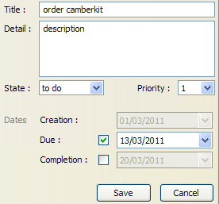
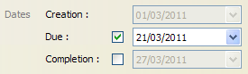
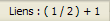
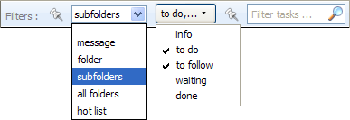
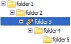
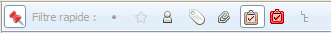
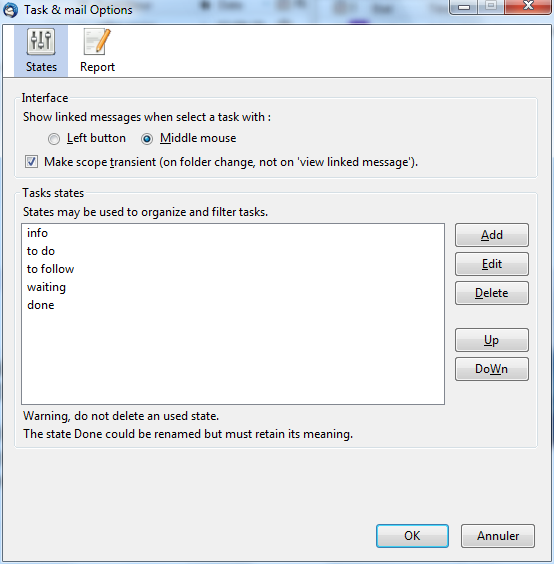

Tasks & mails - Manuel utilisateur
2.3.1 - 24 Mars 2012
Description générale
Cette extension permet de gérer des tâches avec la possibilité de lier ces tâches aux messages. Cette extension fonctionne avec Thunderbird 11.0.
Restrictions
Les tâches sont stockées en local sur l'ordinateur (et pas sur un serveur distant voir Google). Les tâches ne peuvent pas être partagées entre plusieurs ordinateurs ou plusieurs personnes. Les tâches gérées avec Tasks & Mails sont sans relation avec Lightning.
L'extension est prévue pour fonctionner avec des comptes POP et elle n'est pas testée avec des comptes IMAP (mais il est possible que cela fonctionnement correctement).
Qu'est-ce qu'une tâche ?
Une tâche a :
- un titre, un descriptif,
- un état
- à faire : tache qui doit être faite par soi même
- à suivre : tâche qui est délégué. Elle nécessite un suivi
- attente : tâche qui est délégué ou bloqué. Elle nedmj
- fait,
- info, pour consigner des informations.
- une priorité de 0 (basse/vert) à 9 (haute/rouge) en passant par 5 (bleu)
- des liens (0 à n) avec des messages
- un folder de rattachement
- des dates date de création une date d'échéance et une date de réalisation
Une tache est liée à un ou plusieurs messages. Un message peut être lié à une ou plusieurs tâches. Une tâche peut être liée à aucun message. Dans ce cas, elle est au moins liée à un folder.
Interface
La liste des tâches contient les tâches du folder courant et des sous-folders. La liste des tâches contient :
- un icône ( ) signalant si la tâche est en dehors du courant,
- un icône ( , , ,
 ,
,  ,
,  ) signalant si la tâche est liée. Voir icône de liaison,
) signalant si la tâche est liée. Voir icône de liaison, - l'état de la tâche,
- la priorité de la tâche (valeur et couleur),
- le titre de la tâche,
- la date de création,
- la date d'échéance,
- la date de réalisation
- et le nom du folder de la tâche.
La liste est rafraîchie à chaque changement de folder. Elle peut être masquée en utilisant le splitter ou F9.
Les colonnes qui sont affichées peuvent être choisies et seule la colonne titre ne peut être masquée. L'ordre des colonnes peut être changé. La liste peut être triée en cliquant sur le titre de la colonne. Une seule colonne est triée à la fois. Lescolonnes triables sont :
- priorité,
- état,
- date de création,
- date d'échéance,
- et date de réalisation.
Le détail d'une tâche s'affiche à droite de la liste des tâches lorsque l'on crée ou modifie une tâche. Un doucle-clic dans la liste ouvre le détail.
Au-dessus de la liste de tâches, il y a un système pour filtrer les tâches selon leur état, un périmètre de folders et une recherche textuelle. Voir LesFiltres.
La liste des messages contient un icône signalant si le message est lié à une tâche.
La quick-filter-bar permet de filtrer les messages ayant des tâches associées.
Opération sur les tâches
Créer une tâche
Pour créer une tâche, utiliser menu Fichier / Nouveau / Ajouter une tâche, remplissez le détail et 'bouton Sauver'. La tâche est rattachée au folder courant.
Créer une tâche avec lien
Il est possible de créer une tâche qui soit tout de suite liée à (aux) message(s) sélectionné(s) ( Shift-N). Cela rend visible la liste de tâche si nécessaire.
Dans ce cas, le titre de la tâche est récupéré du sujet du message (si un seul message est sélectionné) et le descriptif de la tâche est récupéré de la partie actuellement sélectionnée dans le corpsdu message.
Cela peut-être réalisé en Drag & Dropant un message ou une sélection faite dans le corps du message dans la liste de tâche (fond de la zone).
Modifier une tâche
Pour consulter ou modifier une tâche, on peut utiliser menu Edition / Modifier une tâche ou double click (sans sauver). Si le détail est ouvert, double click, referme de détail. Dans la zone détail d'une tâche, Entrée et Ctrl-Entrée dans le descriptif provoquent la sauvegarde. Shift-Escape annule la sauvegarde.
Suppression de tâche
Pour supprimer une tâche, sélection d'un ou des tâches, puis menu Edition / Supprimer une tâche de la liste de tâches. La suppression d'une tâche, même si elle est liée à un message, ne provoque pas la suppression du message.
Détail d'une tâche
Les états
Une tâche possède un état (à faire, à suivre, fait).
Pour changer l'état d'une tâche, sélectionner la tâche, menu Edition / Modifier une tâche, changer l'état et bouton Sauver. Il est possible de marquer une tâche à 'fait' via menu Tasks & Mails / Marquer comme fait( Shift-D). La date de réalisation de la tâche est automatiquement positionnée à la date du jour.
Les états peuvent être personnalisés. Voir Préférences.
Les priorités
Une tâche possède une priorité : 0(basse) à 9(haute). Pour changer une priorité, menu Edition / Modifier une tâche pour consulter le détail de la tâche ou menu Tasks & Mails / Changer la priorité. Les priorités peuvent également être incrémentées ou décrémentées via menu Tasks & Mails / Changer la priorité / Incrémenter Décrémenter ou Ctrl-Alt Page_Up et Ctrl-Alt-Page_Down. La liste des tâches est triable par priorité. Voir Interface.
Les dates
La date de création est positionnée lors de la création de la tâche et ne peut être modifiée.
Pour positionner une date, il faut au préalable cocher la case correspondante. Pour supprimer une date, il faut décocher lacase correspondante.
Lorsque l'état de la tâche est modifié en 'fait', la date de réalisation est automatiquement positionnée. Inversement, lorsque l'on positionne la date de réalisation, l'état de la tâche passe automatiquement à 'fait'. L'utilisation de menu Tasks & Mails / Marquer comme fait positionneégalement la date de réalisation.
Dans la liste de tâche, la couleur de la date d'échéance change si la tâche est en retard (rouge) ou imminente (orange) dans les 7 prochains jours.
Les liens
Créer des liens
On peut créer et supprimer des liens entre tâches et messages en sélectionnant les tâches et messages désirés et en utilisant menu Tasks & Mails / Lier tâches et messages.
Les liaisons sont possible entre tâche et messages quelque soit les folders. On peut lier 1 tâche à plusieurs messages et une message à pluiseurs tâches à la fois mais on ne peut pas lier plusieurs messages à plusieurs tâches d'un seul coup.
Pour créer des liens entre des folders différents, il suffit que les messages et tâches à lier soient visibles. Pour cela, il est possible de bloquer la liste de tâches et changer le folder pour visualiser les bons messages. Inversement, lorsqu'on visualise les bons messages, on peut utiliser menu contextuel du folderTree / Voir les tâches de ce folder pour voir les bonnes tâches. Une fois les objets visibles, il suffit de créer normalement les liens. Voir Blocage de vue.
Création de lien par drag & drop : on peut drag & droper un(ou des) message(s) sur une tâche ou drag & droper une (ou des) tâche(s) sur un message. Le Drag & Drop permet de créer une tâche si le lâché est réalisé dans la liste de tâche mais en dehors d'une tâche. Voir Créer une tâche liée au message courant
L'utilisation des liens vous donne également la possibilité de regrouper des messages qui ne sont pas forcement dans la même discussion (forward, mauvais utilisation des reply). En les liant à une tâche unique et en utilisant le filtrage, vouspourrez facilement voir tous messages qui ont lieu d'être regroupés.
L'icône de liaison
Dans les listes de tâches (et de messages), un icône ( , , , , , ) précise si au moins une liaison existe.
Si l’icône est rouge, cela signifie que la tâche (ou le message) est liée à au message courant. Si l’icône est jaune cela signifie que la tâche est liée à plusieurs folders. Si l'icône est grisé , cela signifie que le message est lié à une tâche invisible à cause des filtres courants.
Lorsque vous sélectionnez une tâche (ou un message), l’icône des messages liés passe donc au rouge vous permettant de les visualiser plus rapidement. S'il n'y a pas d’icône, cela signifie que la tâche n'a pas de lien avec un message.
Parcourir les liens
Depuis une tâche (ou un message), on peut parcourir, en boucle, tous les messages liés.
Sur une tâche (ou un message), menu Aller / Aller au message suivant ou Shift-L ou bouton de la souris montre les messages liés. Exécuté une deuxième fois, on passe au message (ou tâche) suivant, arrivé audernier, on repasse au 1°.
Les messages (ou tâches) sont parcourus selon l'ordre suivant :
- les messages visibles c'est-à-dire ceux dans le folder courant et ce dans l'ordre de création des liens,
- puis les messages invisibles c'est-à-dire dans un autre folder que le folder courant.
On peut demander à ce que les messages liés soient immédiatemeent montrés dès qu'on sélectionne une tâche avec la souris et il est possible de choisir dans les Preferences quel bouton (gauche ou milieu) utilisé (bouton du milieu par défaut).Si vous recliquez une deuxième fois sur la tâche, vous passez au message suivant.
Lorsque l'on accède aux messages liées à une tâche, si le prochain message à visualiser est invisible, le folder est changé. Dans ce cas, le périmétre de folders n'est pas modifié même s'il est temporaire.
Lorsque l'on accède aux tâches liées à un message, si la prochaine tâche à visualiser n'est pas visible, le nécessaire est fait pour rendre la tâche visible. Dans l'ordre :
- changer le folder en cours de visualisation,
- rajouter les état nécessaires,
- annule la recherche textuelle.
Barre d'état
Le nombre d’objets liés est indiqué dans la barre d'état sous la forme "Liens : (a / b) + c" où :
- a = indice de l'objet courant
- b = nombre d'objet liés visibles
- c = nombre d'objets liés invisibles.
A chaque fois qu'un objet est sélectionné, la barre d'état est remise à jour.
Sélectionner tous les messages liés
Pour sélectionner tous les messages (ou tâches) liés, sélectionner un ou des tâches, puis menu Edition / Sélectionner / Sélectionner les tâches(messages) liées. Vous pouvez sélectionner plusieurs messages.
Supprimer des liens
Pour supprimer des liens, sélectionner les tâches et messages à délier et menu Tasks & Mails / Délier tâches et messages.
Les filtres
Il est possible de choisir les tâches visibles dans la liste selon :
- leur état
- un périmètre de folders
- un texte à rechercher.
Périmètrede folders
Le périmètre de folders peut montrer :
- les tâches du folder en cours,
- le folder en cours + les sous folders,
- uniquement les tâches liées au message courant dans n'importe quel folder (le changement du message courant rafraîchit la liste),
- tous les folders (périmètre temporaire),
- la hot list, les tâches importantes prises dans tous les folders (périmètre temporaire).
La recherche textuelle est faite sur le titre ou la description des tâches en mode case insensitive mais accent sensitive. Ce filtre est temporaire c'est-à-dire qu'il disparaît lorsque l'on change de folder sauf si on bloque le filtre.
Le filtre d'état fonctionne en cochant les états que l'on souhaite voir. On peut tous les cocher ou uniquement un seul état. Le bouton de filtrage contient le 1° état suivi de ',...' s'il y a plusieurs états sélectionnés. Si tous les états sont sélectionnés alors le bouton de filtrage est libellé 'Tous'.
La vue et son blocage sont conservés après un redémarrage de Thunderbird.
Périmètre temporaire
Certains périmètre de folders sont temporaires ('tous les folders', 'hot lits') c'est à dire que lorsqu'on change de folder on quitte ce périmètre pour repasser dans le précédent. Par exemple, en périmètre 'Tous les folders', un changement de folder refera passer en périmètre 'subfolders'.
Un périmètre temporaire est quitté sur un changement de folder (soit en sélectionnant le folder soit en utilisant voir les tâches du folder soit en utilisant aller au folder). Aller au message suivant ne quitte pas le périmètre courant. Ainsi, si vous êtes dans le périmétre 'tous les folders' et demander à voir un message lié, la liste des tâches reste identique.
Il est possible de choisir dans les préférences, si on souhaite utiliser les périmétres temporaires. Si on désactive les périmètrestemporaires, le périmètre ne sera changer que lorsque l'utilisateur le demandera.
Blocage de vue
Il est possible de bloquer la vue. Le blocage joue sur le périmètre de folders et le folder en cours de visualisation. Ainsi, la vue reste la même malgré le changement de folder. De même, la vue reste bloquée sur un périmètre temporaire.
Le blocage permet de créer des liaisons entre n'importe quel folder (visualisation des tâches d'un folder, blocage de la vue et changement de folder). Cela permet également de conserver indéfiniment un périmètre 'tous les folders'.
Lorsque la vue est débloquée, la liste des tâches est rafraîchie sur le folder en cours de visualisation.
A noter qu'une tâche est toujours crée dans le folder courant et ce même si la vue est bloquée et que la vue montre un autre folder.
Icone dans le folderTree
Lors que la vue est bloquée, un icône spécial dans le folderTree permet de visualiser le folder en cours.
Changement de vue sans changer de folder
Il est possible de changer le folder en cours de visualisation dans la liste des tâches sans changer de folder et donc sans perdre de vue les messages en cours en utilisant menu contextuel du folderTree / Voir les tâche de ce folder. Cela permet de créer des liens inter-folder.
Quick-filter-bar
Il est possible de filtrer la liste des messages pour :
- afficher seulement les messages qui ont au moins un lienavec une tâche quelconque,
- afficher seulement les messages qui ont un lien avec la (ou les) tâches sélectionnée(s). Dans ce mode, si aucune tâche n'est sélectionnée, tous les messages avec des liens sont visualisés. La liste des messages est rafraîchie sur le changement de tâche, il est possible de basculer entre une visualisation des messages ou des discussions contenant les messages.
Le mode sticky permet de conserver les filtres lors d'un changement de folder. Lors que Thunderbird redémarre lesous-filtrage n'est pas restitué.
Déplacement de tâches et messages
Règle de base : Lorsqu'un message bouge, les tâches bougent avec. L'inverse NON.
Définition:
- un lien est direct lorsque une tâche est liée à un message qui est dans le même folder que la tâche,
- un lien est indirect lorsque une tâche est liée à un message qui est dans un autre folder que celui de la tâche.
Déplacement de tâche
On peut déplacer une tâche (ou plusieurs) dans un autre folder à l'aide de menu Tasks & Mails / Déplacer vers ... ou d'un drag & drop.
Le déplacement d'une tâche avec des liens est possible et la tâche reste liée à ses messages. Néanmoins, les liens deviennent donc indirects.
Déplacement de messages
Le déplacement d'un message, lorsqu'il est lié à des taches, provoque le déplacement des taches qui lui sont liées et le message reste donc lié aux tâches. Néanmoins, le déplacement d'un message déplace avec lui les tâches en liens direct et uniquement elles. Les tâches qui sont dans d'autres folders restent où elles sont et demeurent liées aux messags que l'on déplace.
Divers
La suppression d'un message, provoque la suppression des tâches liées directement. Les tâches liées indirectement, elles, ne sont pas impactées. A noter que lorsque les messages sont misdans la corbeille, les tâches suivent.
La suppression d'une tâche n'impacte pas les messages.
Le déplacement d'un folder conserve les tâches et liens cohérents.
La suppression d'un folder provoque en cascade la suppression des taches associées.
Le renommage de folder n'impacte pas les tâches.
Il n'est pas possible d'annuler un déplacement de tâche.
Préférences
Il est possible de choisir quel bouton de la souris provoque menu Aller / Aller au message suivant.
Il est possible de désactiver la notion de périmétre temporaire.
La liste des états et le rapport de tâches sont modifiables par l'utilisateur via les options du module. L'ordre des états est modifiable. Attention à noter que la suppression d'un état ne contrôle pas si l'état est utilisé. Il est impossible de supprimer l'état 'fait'. Celui-ci peut être renommé mais il doit garder sa signification.
Rapport de tâches
La génération du rapport de tâches génère un message avec toutes les tâches répondant aux filtres actifs et tri actif (vue arborescente ou plate).
Le rapport peut être adapté dans les préférences de l'extension. Le templace est basé sur du source HTML dans lequel des mots clés sont remplacés par des valeurs.
Le template est construit sur les informations suivantes :
- #TASK_TITLE#, #TASK_PRIO#, #TASK_STATE# et #TASK_DESC# sont remplacées par des informations élémentaires d'une tâche.
- #TASK_CREATION_DATE#, #TASK_DUE_DATE# et #TASK_COMPLETION_DATE sont remplacées par les dates d'une tâche,
- #FOLDER_NAME# est remplacé par le nom du folder.
Le template contient des balises qui délimitent (début et fin comme en XHTML) les objets à afficher :
- #FOLDER# delimite un folder. Un folder est constitué de tâches et de sous folders.
- #TASK# delimite une tâche.
- #SUB_FOLDERS# sont les sous folders.
Exemple de template avec les tâches en arborescence :
Rapport hebdo
<ul>
#FOLDER#
<li>#FOLDER_NAME#</li>
<ul>
#TASK#<li>
#TASK_TITLE# (<tt>#TASK_PRIO#</tt>) <b>#TASK_STATE#</b>
#TASK_CREATION_DATE# <u>#TASK_DUE_DATE#</u> #TASK_COMPLETION_DATE#
<i>#TASK_DESC#</i>
</li>#TASK#
#SUB_FOLDERS#
</ul>
#FOLDER#
</ul>
Merci de prendre en compte.
Autre exemple de template avec toutes les tâches au même niveau :
Rapport hebdo
<ul>
#FOLDER#
#TASK#<li>
#TASK_TITLE#(<tt>#TASK_PRIO#</tt>)#TASK_STATE#
#TASK_DESC#
</li>#TASK#
#SUB_FOLDERS#
#FOLDER#
</ul>
Merci de prendre en compte.
Sauvegarde
Les tâches sont stockée dans une base de données sqlite. Cette base tasks.sqlite est présente, sur l'ordinateur, dans le répertoire thunderbid.user.home
| Sous Windows XP | elle est placée dans le répertoire [documents and settings\user]\application data\thunderbird\profiles\[user]\tasks.sqlite. |
| Sous Windows Seven | elle est placée dans le répertoire [OS drive]\Users\[user]\AppData\Roaming\Thunderbird\Profiles\[user]\tasks.sqlite. |
Lors d'une mise à jour de l'extension, si un upgrade de la base est nécessaire, une sauvegarde est réalisée automatiquement dans le répertoire user.home (tasks.sqlite.backup.1).
Une sauvegarde de la base peut être réalisée à l'aide de mozBackup version 1.4.8.